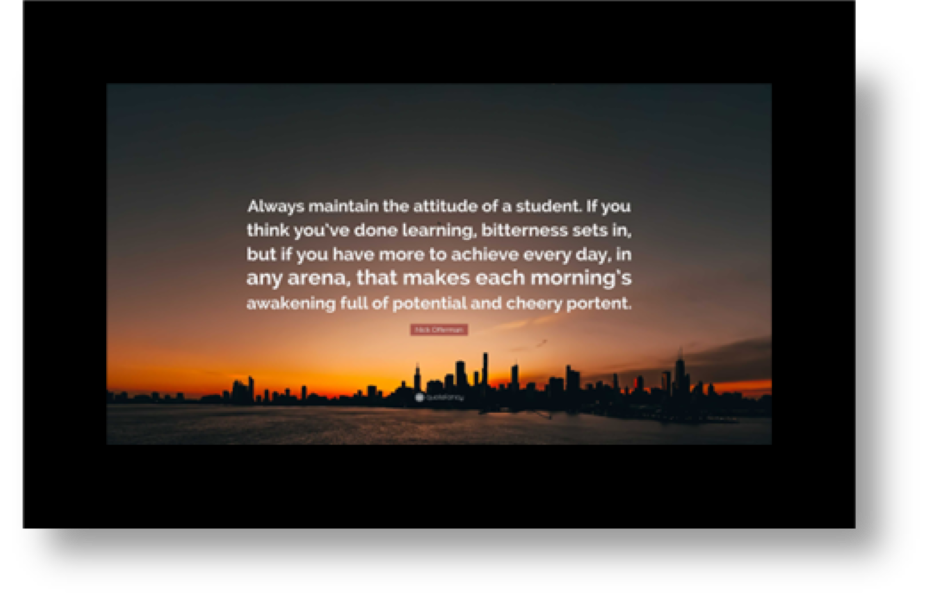

Hi there, Welcome to my CS journey!
My name is Olamide Britto, and I’d like to take you on a ride through who I am and what I aspire to become in the world of technology.
Jump to: Why I Joined AltSchool

📍 Kingston, RI
🎓 Bachelor of Science in Computer Science
📆 Anticipated Graduation: May 2026
📍 Warwick, RI
🎓 Associate of Science in Cybersecurity
📆 Graduated: May 2024
🌍 Remote / Nigerian-based
🎓 School of Engineering - Backend Engineering Program
📆 Anticipated Graduation: March 2026
🪪 Student ID: ALT/SOE/025/1444
You might be wondering why I’d join AltSchool while already studying Computer Science. Here’s why:
I’m someone who constantly seeks to improve. While I’m learning a lot, I needed a place that focuses not just on theory but also on building real-world skills. AltSchool gives me just that — a space to grow, collaborate, and thrive.
I joined for these reasons:
AltSchool matches the kind of environment I want to learn in — one built on collaboration, community, and continuous growth. Through learning circles and hands-on experience, I believe I’m exactly where I need to be.